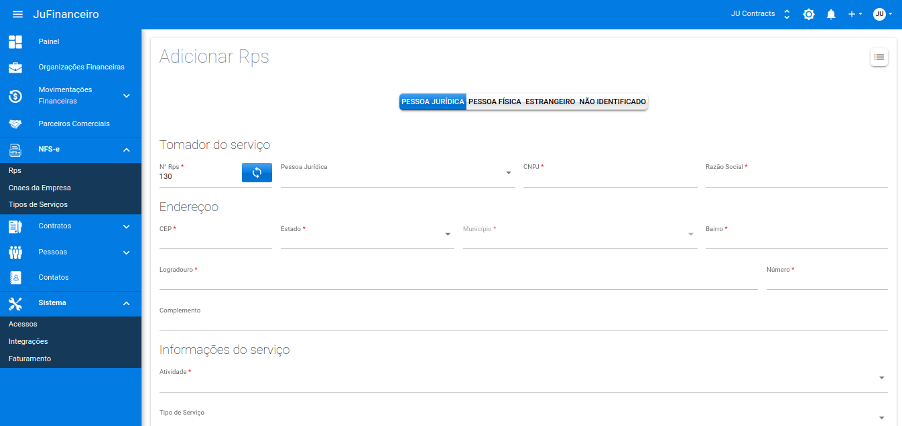

➡️ O que é uma NFS-e?
Uma NFS-e (Nota Fiscal de Serviços Eletrônica) é um documento de existência digital, gerado e armazenado eletronicamente em Ambiente Nacional pela RFB, pela prefeitura ou por outra entidade conveniada, para documentar as operações de prestação de serviços.
➡️ Para emitur uma NFS-e você deve seguir os seguintes passos:
➡️ Preencher os campos Ins. Municipal e CPF/CNPJ
➡️ Após isto, preencha os seguintes campos.
➡️ O que é um Cnae?
É a Classificação Nacional de Atividades Econômicas utilizada para determinar quais atividades são exercidas por uma empresa. Obrigatória a todas as pessoas jurídicas, inclusive autônomos e organizações sem fins lucrativos, a CNAE é essencial para obtenção do CNPJ.
➡️ Quais os tipos de Serviços?
Um serviço de uma empresa prestado para a prefeitura é uma atividade ou trabalho especializado que uma empresa oferece ao município ou administração local para atender a demandas específicas e necessidades governamentais. Esse tipo de serviço pode variar amplamente, abrangendo desde consultorias e assessorias técnicas até a implementação e manutenção de sistemas, obras públicas, fornecimento de equipamentos, entre outros.

➡️ Após isso faça os seguintes passos para ativação da NFS-e:
➡️ Edite a NFS-e caso necessário:
↳ Autenticação.
↳ Aliquota e Local.
↳ Recibo.
➡️ Após isso iremos gerar a NFS-e no campo RPS:
➡️ O que é RPS?
é o Recibo Provisório de Serviços. Documento autorizado pelo Fisco e fornecido pelo contribuinte ao tomador do serviço contendo os dados de uma prestação de serviços que deverão ser informados ou transmitidos posteriormente a o Fisco Municipal quando não for possível a geração imediata da respectiva NFS-e.
➡️ Preencha os campos:
